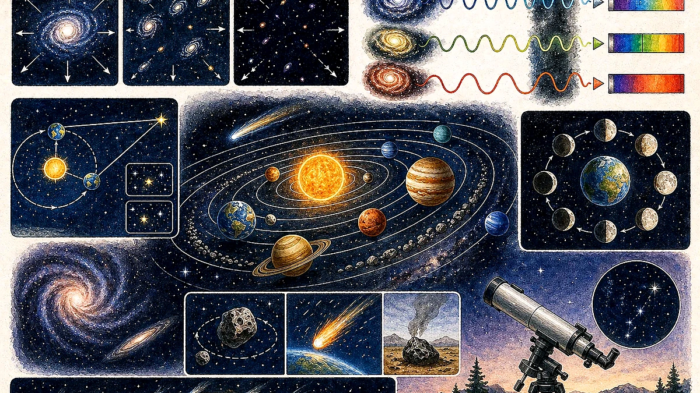
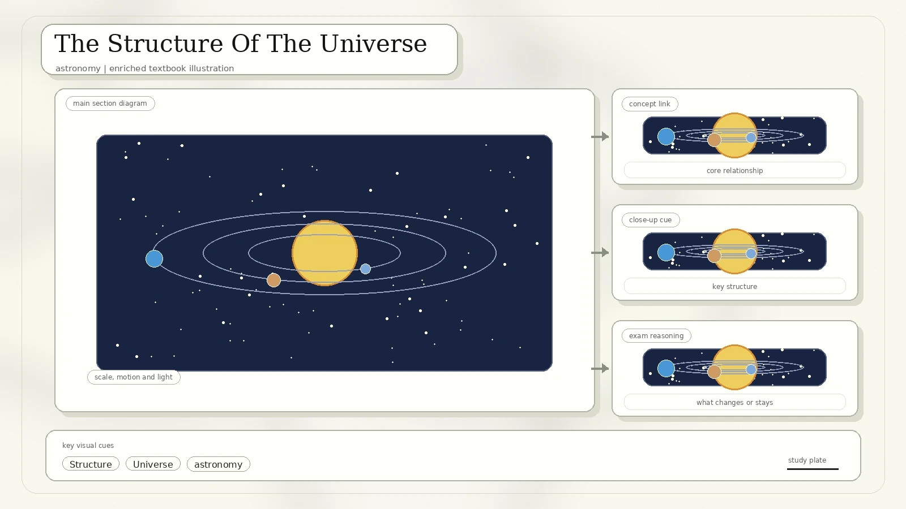
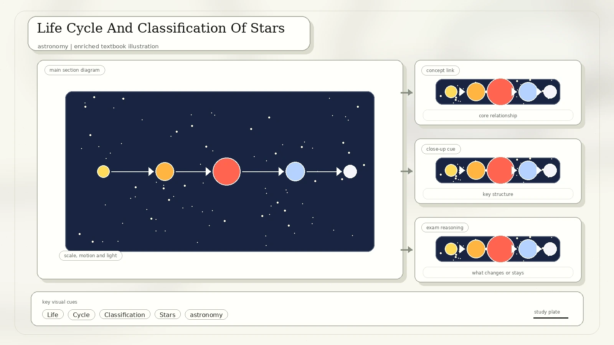
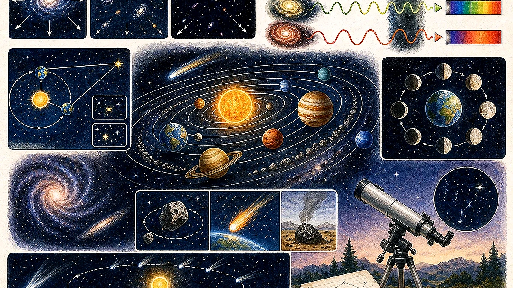
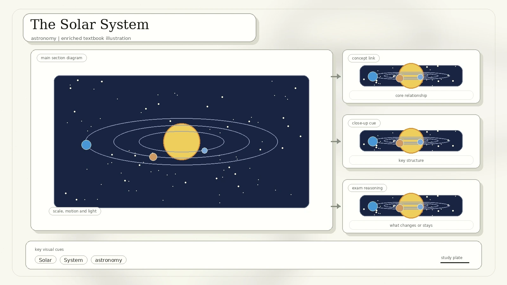
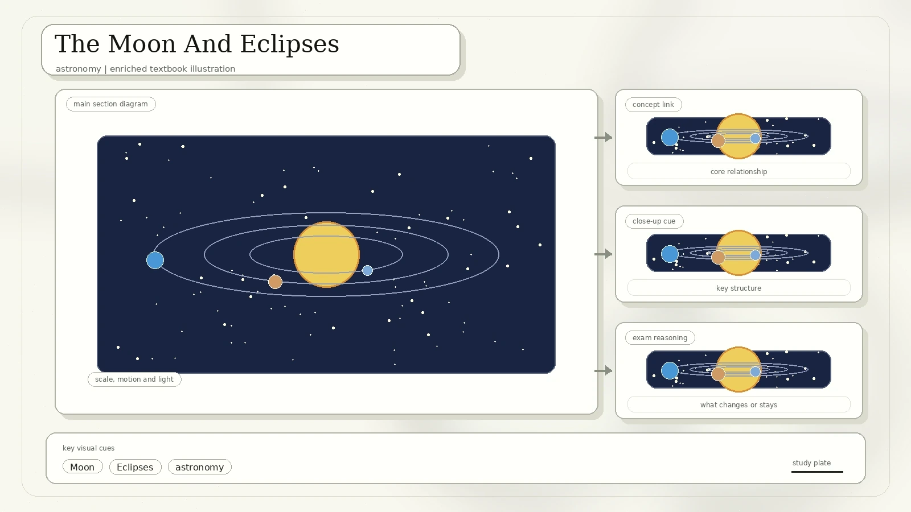
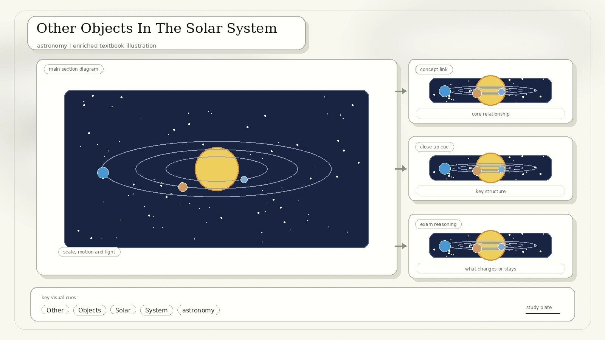

What Astronomy Studies
Astronomy uses mathematics, physics, and chemistry to explain celestial objects and events. The scan lists planets, moons, stars, nebulae, galaxies, and comets as objects of interest, and eclipses, supernovae, gamma-ray bursts, and cosmic microwave background radiation as phenomena that astronomers study.

Where did we come from, and how does the universe work?
Babylonians, Greeks, Indians, Egyptians, Chinese, Maya, and peoples in the Americas made careful sky observations.
Separate observation from explanation: a diagram may show what is seen, while a theory explains why.
The Origin Of The Universe
The lesson compares three ideas. The steady-state theory said the universe always existed and that new matter formed as it expanded. The oscillating model imagined a cycle of expansion and contraction. The Big Bang theory explains that the universe began in a very hot, dense state about 14 billion years ago and has been expanding and cooling since.

| Model | Main Claim | How To Judge It |
|---|---|---|
| Steady state | Universe expands but keeps the same average density because new matter is created. | Modern observations since the 1960s strongly disfavor this model. |
| Oscillating model | Universe repeatedly expands and contracts, like a cosmic cycle. | It needs evidence that expansion will reverse, which the scan notes is not established. |
| Big Bang | Space itself expanded from a hot, dense early state; matter later cooled into stars and galaxies. | Supported by redshift, cosmic microwave background radiation, and the observed abundance of light elements. |
Doppler Shift And The Expanding Universe
The scan explains Doppler shift with an ambulance siren: when the source moves toward an observer, waves arrive more frequently and the pitch is higher; when it moves away, waves arrive less frequently and the pitch is lower. With light, movement away stretches wavelengths toward red.

Most distant galaxies appear redshifted, which means their light has been stretched as the galaxies move away from us.
Redshift does not mean every galaxy is physically red. It means the measured spectral lines shift toward longer wavelengths.
The Structure Of The Universe
The universe includes space, time, matter, and energy, from the largest superclusters to the smallest subatomic particles. The scan also mentions the Wilkinson Microwave Anisotropy Probe, which mapped tiny temperature differences in the cosmic microwave background.

The largest structures form a web: dense filaments and clusters separated by huge empty-looking voids.
Superclusters contain galaxy clusters and groups.
Galaxies contain stars, gas, dust, planets, and dark matter bound by gravity.
Life Cycle And Classification Of Stars
Stars form in nebulae, large clouds of gas and dust. Gravity pulls the material together until a protostar becomes hot and dense enough for nuclear fusion. Fusion creates outward pressure that balances gravity for most of a star's lifetime.

| Stage Or Idea | What The Scan Shows | Study Note |
|---|---|---|
| Nebula to star | Gas and dust collapse under gravity; fusion starts when the core becomes hot enough. | Fusion in main-sequence stars usually turns hydrogen into helium. |
| Mass matters | Large stars burn fuel quickly and may last only millions of years; smaller stars last much longer. | Mass determines lifetime and final fate. |
| Medium star fate | A Sun-like star expands into a red giant, then forms a white dwarf that may cool into a black dwarf. | Black dwarfs are theoretical because the universe is not old enough for white dwarfs to have cooled that far. |
| Star colour | Colour depends on surface temperature: red is cooler, white and blue are hotter. | A spectrum shows which wavelengths are brightest, helping estimate temperature. |
Galaxy types: the scan shows spiral, elliptical, and irregular galaxies. Spiral galaxies have arms, elliptical galaxies are more rounded or oval, and irregular galaxies lack a simple regular shape.
Distance, Luminosity, And Constellations
The direct way to measure the distance to nearby stars is parallax. As Earth orbits the Sun, a nearby star appears to shift against a much more distant background. The smaller the shift, the farther the star is.

The apparent shift is caused by Earth's change in observing position as it orbits the Sun.
A constellation is a group of stars that appears to form a pattern in the sky. It is a map tool, not usually a physically close star family.
The Solar System
The solar system formed about 4.6 billion years ago from a rotating cloud of gas and dust. Gravity pulled material inward to form the young Sun, while leftover material became planets, moons, asteroids, and comets. The Sun now provides gravity, heat, and light for the system.

The visible surface is the photosphere. Above it are the chromosphere and corona; prominences and flares are energetic solar events.
Mercury, Venus, Earth, and Mars are rocky planets closer to the Sun.
Jupiter, Saturn, Uranus, and Neptune are larger worlds farther from the Sun, with thick atmospheres and many moons.
Pluto is classified as a dwarf planet because it orbits the Sun and is round, but has not cleared its orbital neighbourhood.
The Moon And Eclipses
The leading idea for the Moon's formation is the giant-impact hypothesis: early Earth was struck by a Mars-sized object often called Theia. Heavy material stayed mainly with Earth, while lighter rocky debris entered orbit and later gathered to form the Moon.

Bright highlands and darker maria record ancient volcanism and impact cratering.
A solar eclipse happens when the Moon blocks sunlight from reaching part of Earth. A lunar eclipse happens when Earth blocks sunlight from reaching the Moon.
Shadow vocabulary: the umbra is the full shadow; the penumbra is the partial shadow. Total and partial eclipses depend on where the observer sits in these shadow regions.
Other Objects In The Solar System
The last scanned page distinguishes comets, asteroids, meteoroids, meteors, and meteorites. These small bodies are leftovers and fragments from solar-system formation and later collisions.

| Object | Meaning | Example Or Note |
|---|---|---|
| Comet | An icy body that releases gas and dust when it nears the Sun, forming a coma and tails. | Halley's Comet is visible from Earth about every 75 to 76 years. |
| Asteroid | A rocky body smaller than a planet that orbits the Sun. | Many orbit in the asteroid belt between Mars and Jupiter. |
| Meteoroid | A smaller rocky or metallic fragment from an asteroid, comet, or planet. | It becomes a meteor when it heats up in Earth's atmosphere. |
| Meteorite | A fragment that survives passage through the atmosphere and reaches the ground. | Useful for studying early solar-system material. |
Review Questions
Describe how the Big Bang model explains the expanding universe.
Explain what determines a star's colour and apparent brightness.
List the planets in order and explain why Pluto is a dwarf planet.
Compare solar and lunar eclipses using Sun, Earth, Moon, umbra, and penumbra.
Source converted from IMG_20260427_0031.pdf. Diagrams and examples were redrawn or rewritten in HTML/SVG while preserving the scanned lesson flow.